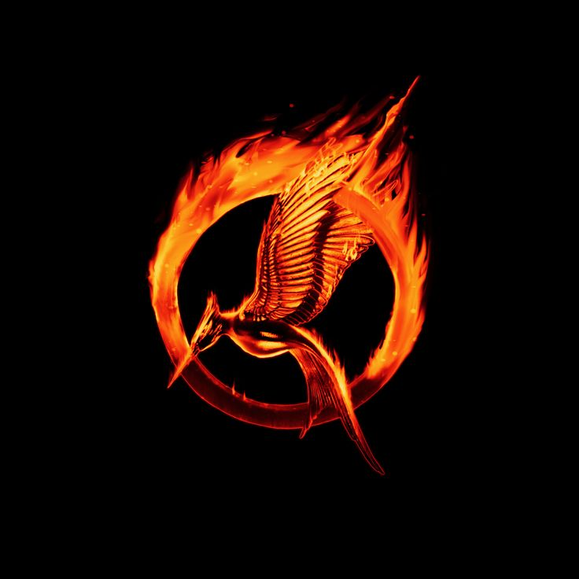
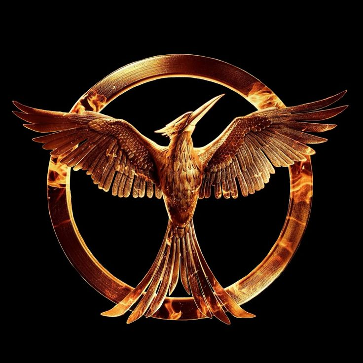
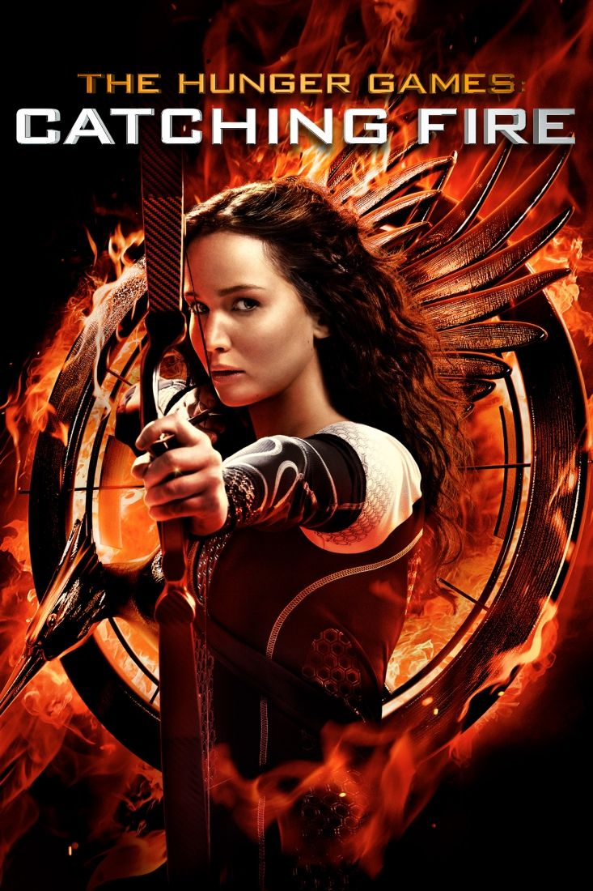
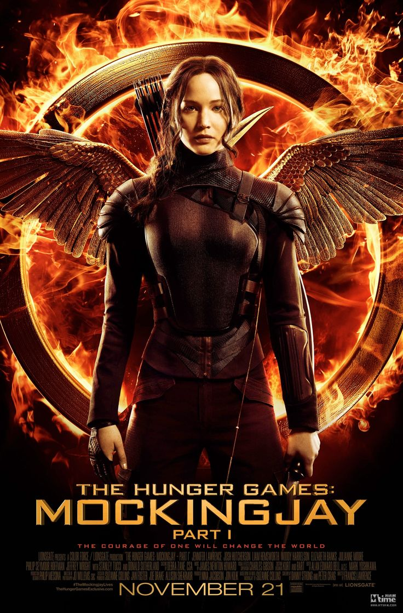
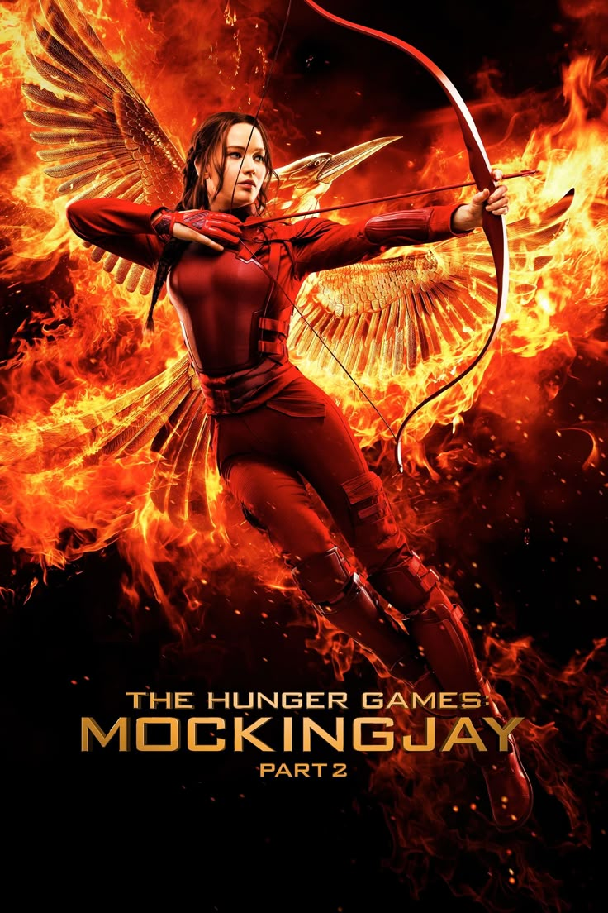

Introduz Katniss Everdeen, que se oferece como tributo no lugar de sua irmã. Mostra sua primeira participação nos Jogos e o início de sua resistência contra o sistema.
Katniss é forçada a retornar à arena em uma edição especial dos Jogos chamada Massacre Quaternário, reunindo vencedores anteriores. A rebelião começa a se intensificar.
Katniss se torna o símbolo da resistência (o Tordo) e a história culmina na guerra contra a Capital.
Em Panem, os 12 distritos devem enviar um garoto e uma garota para lutar até a morte nos Jogos Vorazes, um evento transmitido ao vivo para toda a nação. Quando Prim, irmã de Katniss Everdeen, é sorteada, Katniss se oferece como voluntária para tomar seu lugar. O outro tributo do Distrito 12 é Peeta Mellark, que já havia demonstrado sentimentos por Katniss. Eles são levados à Capital, onde recebem treinamento e passam por entrevistas. Na arena, Katniss usa suas habilidades de caça para sobreviver e enfrenta armadilhas, bestas, e outros tributos. Com Peeta, formam um “casal” para conquistar o público. Os dois vencem juntos após ameaçarem se suicidar com frutos venenosos, forçando os idealizadores a permitir dois vencedores.
Após desafiar a Capital nos últimos Jogos, Katniss torna-se símbolo de rebelião. O presidente Snow a obriga a manter a imagem de romance com Peeta para conter os levantes nos distritos. Anuncia o Massacre Quaternário (75º Jogos): os tributos serão escolhidos entre os vencedores dos anos anteriores. Katniss e Peeta voltam à arena, agora com tributos mais experientes. A arena é uma armadilha mortal dividida em setores com armadilhas rotativas (névoa ácida, macacos, raio...). Com a ajuda de outros tributos como Finnick, Johanna, e Beetee, Katniss destrói a arena usando um raio e uma flecha. Ela é resgatada pelos rebeldes do Distrito 13. Peeta, porém, é capturado pela Capital.
Katniss acorda no misterioso Distrito 13, que sobreviveu ao controle da Capital. Ela reluta, mas aceita ser o símbolo da rebelião: o Tordo. A rebelião começa a se espalhar. Distritos atacam centros de produção da Capital.Peeta aparece em transmissões pedindo cessar-fogo. Katniss percebe que ele está sendo manipulado. Após uma missão de resgate, Peeta é libertado, mas volta perturbado e agressivo. Descobre-se que ele foi manipulado: teve a mente manipulada para odiar Katniss.
A rebelião chega à Capital. Katniss, Gale, Peeta e um grupo de soldados infiltram-se para matar o presidente Snow. A Capital está cheia de armadilhas mortais, como uma arena gigante. Muitas baixas ocorrem, inclusive Finnick Odair. Katniss testemunha um ataque com bombas que mata Prim, sua irmã. Após a vitória rebelde, Katniss descobre que Coin, líder do Distrito 13, pode ter sido responsável pela bomba. Ela executa Coin durante a cerimônia da execução de Snow. Após a guerra, Katniss volta ao Distrito 12 e reconstrói sua vida com Peeta. O filme termina com os dois tendo filhos em um mundo mais livre.